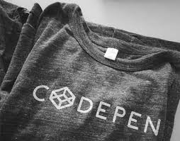
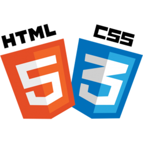

Matt Frazier
Aspiring Programmer
Currently an English teacher living in Tokyo and student at Le Wagon Programming Bootcamp.
Currently an English teacher living in Tokyo and student at Le Wagon Programming Bootcamp.
| Projects & Interests | Description |
|---|---|
|  | This was the one of the first projects I did on my own. It's very basic. Please don't judge too hard. Click the image and see! |
| Here you can view the second project I've ever built. While still basic, it's much better. Oddly enough it've almost exactly what this page page represents. What took me a week to do at that time I accomplished only today this time. Click the image! | |
| I love weight training and and self improvement on all levels. | |
| Ruby is very difficult for me, but I still want to learn and shift to a career in IT. | |
 |
I have played around with JS a little in the past, but I've forgotten nearly all of it. |
|  | I have had some minimal experience with HTML and CSS. |